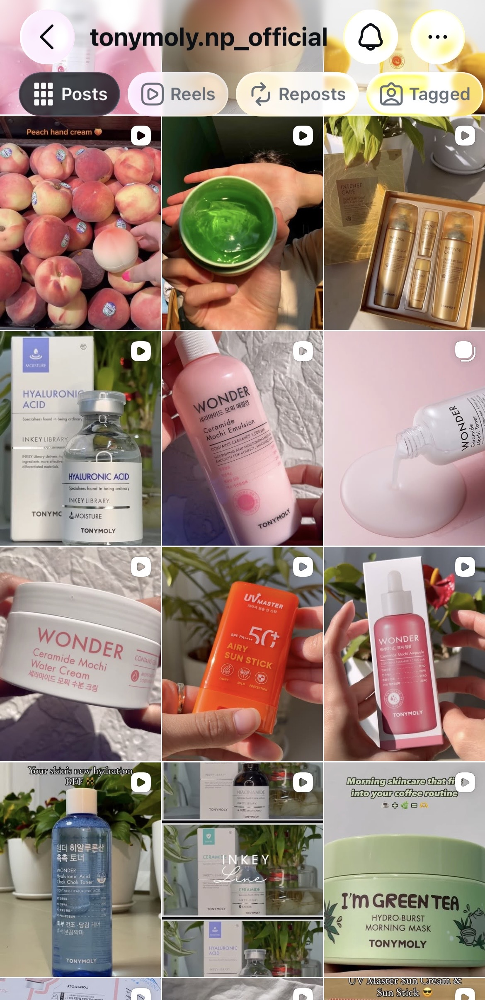

Case Study · TONYMOLY Nepal · Apr 2024 – Apr 2025
How data, storytelling, and audience insights increased growth by 33%
TONYMOLY carried a strong international reputation but faced real challenges building a highly engaged local community on Instagram and TikTok in Nepal.
The objective wasn't simply to post more content — it was to create content that resonated with Nepali consumers, strengthened brand trust, and converted that engagement into sales.
Low Engagement
Posts weren't generating meaningful saves, shares, or comments — signals of genuine audience interest.
Inconsistent Content
No clear content pillars or publishing rhythm, making the brand feel unreliable and hard to follow.
Competitive Market
The Nepali beauty market is crowded. K-beauty, while aspirational, needed clear local positioning to stand out.
Weak Community Ties
No system for UGC, customer testimonials, or meaningful two-way interaction with the audience.
Instead of focusing solely on promotional posts, I built a strategy around four content pillars — each serving a different stage of the audience journey.
Position TONYMOLY as a trusted knowledge source, not just a brand selling products.
Turn customers into visible, valued advocates — people who feel part of the brand story.
Stay culturally relevant and reach audiences beyond existing followers through discovery-first content.
Drive purchase intent at the right moment, without feeling like an ad.
Why lead with education instead of promotion?
Nepali consumers were discovering K-beauty but often lacked context to make confident purchase decisions. By leading with educational content, what's in the product, how to use it, what skin concerns it addresses, I positioned TONYMOLY as the expert, not just the seller. Trust preceded the transaction. Consumers who learned from us were far more likely to buy from us.
Why prioritize Reels and TikTok over static posts?
The data was clear within the first few months: short-form video generated three to four times more reach than equivalent feed posts. Instagram's algorithm rewards Reels with external distribution, and TikTok's For You page gave us access to audiences who had never encountered the brand. For a brand trying to grow, that discovery surface was too valuable to ignore.
Why invest in UGC and community content?
People trust people more than they trust brands. A customer photo or unsponsored review converts with far more credibility than polished brand photography. By building systems to encourage and reshare UGC, I transformed the audience from viewers into collaborators, and that shift showed up in both engagement and sales metrics.
Add your best-performing screenshots below, Reels, feed posts, Stories, and TikTok content.

Feed Overview
Product education and launch content, best-performing feed formats.
Reel
Short-form video driving discovery and reach beyond existing followers.
UGC Reel
Community content and user-generated Reels building audience trust.
Follower Growth Trajectory — Social Media & Content Strategy Internship (Dec 2024 – Apr 2025)
Education outperformed promotion, every time.
Consumers engaged most with skincare education: ingredient breakdowns, how-to guides, skin concern content. Direct ads drove conversions, but educational content built the trust that made those conversions possible in the first place.
Short-form video is the best discovery engine available.
Reels and TikToks consistently outperformed feed posts in reach, often by 3x or more. Each video was a chance to be discovered by someone who had never heard of TONYMOLY Nepal. For a growing brand, that distribution is irreplaceable.
Data should guide creativity, not replace it.
Metrics told me what was resonating, but not why. The best content decisions combined analytics with genuine curiosity about the audience: what they cared about, what worried them, what made them feel seen.
The next phase of growth would require moving beyond organic content into owned channels and structured community infrastructure.
Great marketing doesn't interrupt people. It earns their attention.
This project reinforced that the strongest growth comes from understanding people first, testing continuously, and letting data shape creative decisions, not replace them. TONYMOLY Nepal didn't grow because I posted more content. It grew because I spent time understanding what Nepali consumers actually cared about, and built a content system around that.